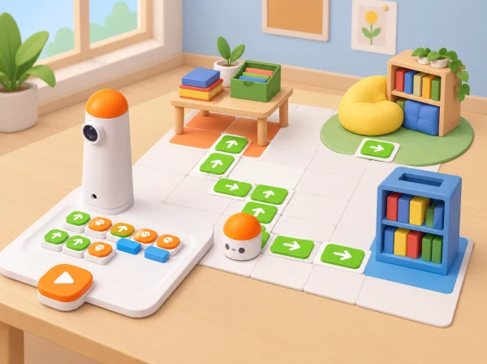
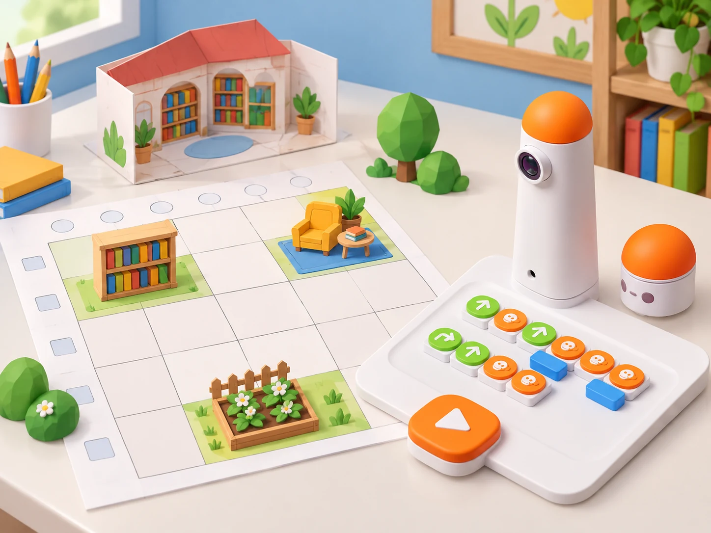
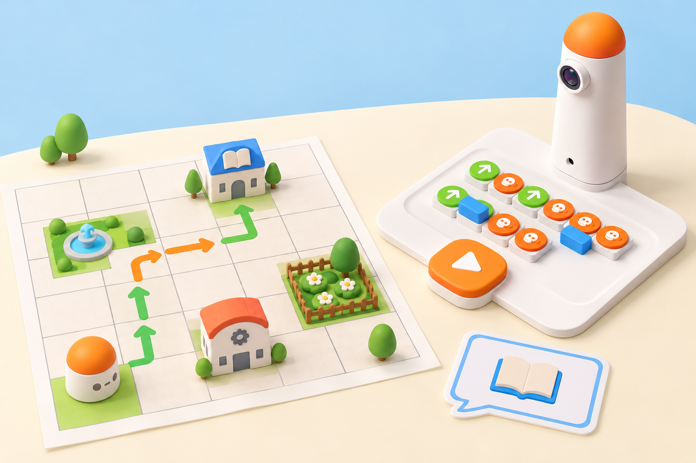
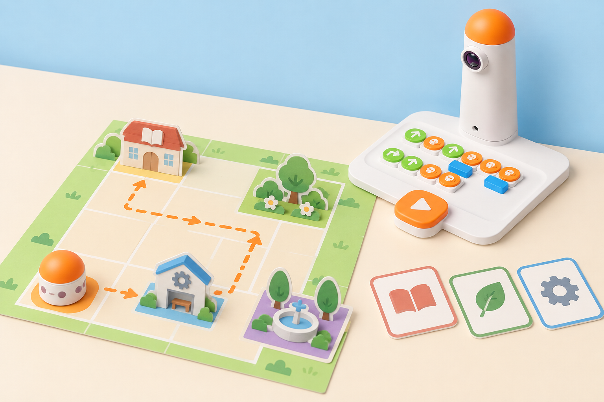

La ruta dels llibres viatgers
🏷️ Convivència i ciutadania
🌱 Situació, repte i intenció
La guia oficial parteix de l’experiència prèvia amb el mode de programació de Matatalab Lite. Aquesta adaptació trasllada el projecte al Coding Set de la dotació: l’alumnat tradueix la ruta del mapa a blocs tangibles de moviment. Les coordenades serveixen per a comunicar llocs a les persones, no són ordres que el robot puga llegir.
🎯 Aprenentatges i vocabulari
- Observar l’espai i representar-ne punts d’interés en un mapa miniatura i una graella.
- Programar una seqüència que visite quatre espais del centre i comprovar-ne el recorregut.
- Escriure una recomanació original per a un llibre inventat sense copiar sinopsis ni usar dades de lectores.
- Guiar una altra persona, recollir-ne el retorn i revisar tant el mapa com les ordres.
📚 Connexió cultural pròpia
La classe pot vincular el recorregut a un espai de lectura, un pati, una aula taller o un element de memòria del centre. Si es vol afegir patrimoni de la localitat, useu fonts municipals, de biblioteca o d’una entitat cultural i distingiu el que està documentat del que és una narració inventada. Els personatges i el fil del llibre són creats per l’alumnat; els fets de la visita es verifiquen per separat.
🧰 Materials i preparació
Prepareu el Coding Set complet, paper gran per al mapa, regles, retalls de cartó i paper, cinta de pintor, targetes de símbols, llapis, fulls de recerca i un full de registre. Demaneu abans a l’escola informació pública o autoritzada sobre la història i cultura del centre, i delimiteu quins espais es poden observar i representar. No fotografieu persones ni inclogueu horaris, codis d’accés, noms complets o informació de seguretat.
Si no hi ha plànol compartible, mesureu o estimeu només relacions de proximitat entre espais amb permís docent, i indiqueu que el mapa és esquemàtic. Per a una prova física, dibuixeu la quadrícula amb caselles de 10 × 10 cm segons l’especificació de Matatalab; comproveu l’alineació del pas del model local amb una ordre curta i registreu desviacions abans de programar la ruta. Un mapa a escala diferent només s’usa per a planificar o simular.
Les coordenades (x, y) són una eina per a trobar i comunicar una ubicació en el mapa; MatataBot no rep parelles de coordenades com a codi. L’alumnat tradueix un itinerari entre punts en blocs físics d’avanç, retrocés i gir, tenint en compte l’orientació inicial.
📅 Seqüència didàctica
Les quatre sessions sumen 180 minuts, com la durada publicada del projecte de referència: 45 minuts per investigar i iniciar la visita, 90 per al mapa, les maquetes i la programació, i 45 per a les presentacions i la reflexió. La distribució en quatre trobades permet assecar, revisar i provar els materials entre sessions. La proposta local concreta quatre parades; manteniu la mateixa quantitat en el mapa, el guió, el programa i la visita.
Investiguem el centre que presentarem
Fase 1 · Activem i prediem
Comenceu amb l’encàrrec: qui arriba per primera vegada i quina informació li seria útil? Cada equip anota què ja sap del centre i quines dades necessita confirmar.
Fase 2 · Explorem i construïm
Consulteu una font del centre o pregunteu a una persona autoritzada sobre la història, cultura o ús compartit de quatre espais. Anoteu font, data i allò que encara no sabeu.
Fase 3 · Expliquem i registrem
Feu una observació docent guiada o useu notes/esbossos preparats. Identifiqueu entrades, passadissos i llocs visitables sense entrar en zones restringides; registreu només la informació necessària per al plànol.
Fase 4 · Apliquem i millorem
Decidiu quina distància representarà cada tram i dibuixeu límits i quatre punts d’interés. Un altre equip comprova si pot trobar l’inici i les destinacions i assenyala què cal aclarir.
Fase 5 · Comprovem i reflexionem
Fem el mapa miniatura i les maquetes
Fase 1 · Activem i prediem
Reviseu l’esbós de la sessió anterior i prediu quina informació ha de mantindre’s perquè el mapa siga llegible i conserve l’escala.
Fase 2 · Explorem i construïm
Traslladeu passadissos i ubicacions amb la mateixa escala. Afegiu títol, nord o orientació inicial, llegenda i una quadrícula amb lletres i nombres.
Fase 3 · Expliquem i registrem
Creeu maquetes tridimensionals simples de paper per als edificis o espais representats; manteniu-les baixes i fora de la trajectòria del robot o substituïu-les per símbols plans. Assigneu coordenades als llocs.
Fase 4 · Apliquem i millorem
Feu que cada persona trobe una destinació a partir d’una parella ordenada. Contrasteu que les maquetes i els símbols conserven la posició relativa al mapa i que l’escala no ha canviat.

Fase 5 · Comprovem i reflexionem
Codifiquem i escrivim la visita guiada
Fase 1 · Activem i prediem
Trieu un punt d’inici, l’ordre de les quatre parades i una ruta que el robot puga recórrer sense xocar. Marqueu amb una fletxa la seua orientació inicial i predigueu cada gir.
Fase 2 · Explorem i construïm
Convertiu la ruta dibuixada en blocs de moviment. Col·loqueu la seqüència d’esquerra a dreta i proveu un tram cada vegada.

Fase 3 · Expliquem i registrem
Redacteu quatre fragments de visita guiada de dues o tres frases: nom de l’espai, un fet verificat i què pot descobrir-hi el visitant. Citeu oralment la font o assenyaleu-la en una targeta docent; no inventeu fets locals.
Fase 4 · Apliquem i millorem
Si MatataBot s’allunya de la ruta, registreu la casella, l’orientació i el primer bloc que cal revisar. Depureu una instrucció i practiqueu la narració sincronitzada amb les parades.
Fase 5 · Comprovem i reflexionem
Guiem MatataBot i revisem el projecte
Fase 1 · Activem i prediem
Situeu mapa, maquetes i senyal d’inici; assigneu qui programa, qui narra i qui registra. Predigueu si el públic podrà seguir la ruta només amb el mapa i el discurs.
Fase 2 · Explorem i construïm
Cada equip mostra el codi, fa el recorregut i presenta els espais amb el discurs. El públic segueix el mapa i marca les quatre parades.

Fase 3 · Expliquem i registrem
Una altra parella indica un punt fort i formula una pregunta concreta sobre escala, informació o ruta. Registreu el retorn i la parada a què fa referència.
Fase 4 · Apliquem i millorem
Corregiu una part del mapa o del programa a partir del retorn i torneu a comprovar que el recorregut es pot seguir.
Fase 5 · Comprovem i reflexionem
Responeu: què ens ha costat, quina font hem utilitzat i com ens hem repartit el treball?
🧪 Evidències i avaluació
Conserveu la font i data de cada dada, l’esbós, l’escala escrita, la quadrícula, la llegenda, les coordenades de les parades, les maquetes, el guió, la seqüència de blocs i els resultats de les proves. Valoreu amb tres nivells —amb modelatge, amb alguna pista, de manera autònoma i explicada— si l’equip (1) representa posicions relatives i usa l’escala amb coherència; (2) localitza llocs en una graella sense confondre (x, y) amb una ordre del robot; (3) programa i depura la ruta considerant orientació;
i (4) comparteix dades verificades amb una audiència. L’èxit no depén de la ruta més curta: també compten una visita segura, comprensible i fidel al mapa.
♿ Participació, accessibilitat i seguretat
Oferiu plànol d’alt contrast, símbols en relleu, coordenades en targetes grans i versions de ruta amb menys parades. Els rols poden ser investigador/a, cartògraf/a, constructor/a, programador/a, guia oral, narrador/a amb comunicació augmentativa o auditor/a de fonts; no cal fer la visita física per participar. En lloc d’una excursió, podeu treballar amb notes i esbossos de llocs públics preparats pel centre. Manteniu models lluny dels passadissos de moviment, no tapeu sensors o rodes i atureu el robot abans de moure maquetes.
La visita real es fa només en zones autoritzades i amb les normes habituals del centre.
🔗 Referents i adaptació
MatataBot’s Guide és un projecte per a presentar l’escola a un robot visitant: la guia publicada proposa 45 minuts d’investigació i visita, 90 minuts per a dibuixar el recinte a escala, crear maquetes de paper i codificar ruta/discurs, i 45 minuts de presentació i retorn. La pàgina esmenta com a coneixement previ el mode de programació de Matatalab Lite; aquesta adaptació el trasllada a una seqüència física del Coding Set, sense confondre les dues interfícies.
Conserva investigació de la cultura i distribució del centre, mini-plànol a escala, maquetes tridimensionals, ruta programada i discurs de guia; els converteix en una benvinguda pròpia amb fets locals verificats i protocols de privacitat. A diferència de la font, ofereix opcions basades en esbossos preparats quan la visita no és possible i explicita que les coordenades són de mapa, no instruccions que MatataBot entenga directament.
Els personatges, guió, mapa, pictogrames i visuals intercalats són originals i basats en el robot i la torre reals. La parada de préstec connecta també amb la idea de destinacions de Delivery Animals, sense afirmar que el robot transporte llibres.